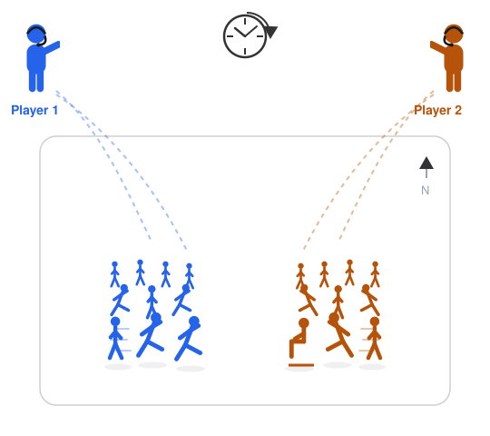
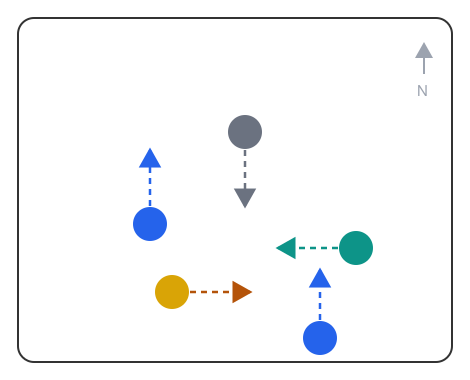

World Commander: Natural-Language Command of Agent Crowds in Real-Time Strategy Games Under Latency and Memory Budgets
World Commander is a research program in which a human commands crowds of agents in a real-time strategy game through natural language: the commander issues orders, from broad strategy down to individual unit moves, and a language model executes them as in-game actions while the game continues to run. The central question is how much this costs, in latency and memory, and how that cost can be reduced. The efficient-inference methods that could reduce it, such as cache eviction, quantization, and distillation, are at present evaluated only on static text benchmarks, never inside a game in progress, where discarding the wrong information can change the outcome. This program evaluates such methods in that setting, across environments of increasing difficulty, from a toy arena to StarCraft II, then to several human commanders at once, and in time a full game. As currently planned, its projects target results that adjacent research communities already value: a benchmark for the cost of real-time command, a compact encoding of game state, and, later, real-time motion for commanded crowds.
1. Introduction
In a real-time strategy game such as StarCraft II, most of a player's effort goes into manual control rather than strategy: selecting units, locating commands, and issuing hundreds of actions per minute. Deciding what to do is a small fraction of the effort; the remainder is mechanical work imposed by the interface.
A different interaction model is already familiar from other settings. With a coding assistant, the human states an intent, the assistant performs the low-level steps, and the human reviews and redirects. Applied to a strategy game, the player becomes a commander who observes, decides, and issues orders, from broad strategy to individual moves, for the units to carry out (Figures 1 and 2). A voice-commanded strategy game appeared as early as 2008 (Tom Clancy's EndWar [1]), but it recognised only a fixed grammar of roughly seventy phrases; what was missing was free-form language understanding. Modern language models provide it. What they still lack is speed: a model can interpret a command but is too slow to act while the game continues.


This program therefore begins from a concrete question: how much does it cost, in latency and memory, for a language model to execute a commander's orders quickly enough to play, and how can that cost be reduced?
2. Related work
Three lines of prior work lead up to this program, reviewed in turn below; a fourth group of ideas (Section 2.4) provides components that the program reuses.
2.1. Agents that play StarCraft II
Machines can already play StarCraft II. DeepMind's AlphaStar [2] reached top human level through reinforcement learning, but it plays autonomously, without a human and without language, and required very large computational resources to train. More recently, language models have been connected to the game and operate it from text [3] or screenshots [4], and a related line of work allows a human to steer an agent by speech while the agent handles low-level execution [6][7][8]. In all of these the game is slowed or paused so that the model has time to deliberate. CivRealm [9] makes a comparable observation in a turn-based strategy game.
2.2. Real-time evaluation of language models
A separate line of work measures what happens when the clock is not slowed. When a model must keep pace with a game running in real time, its performance falls sharply [10][11]. These studies examine a single model acting alone, however, rather than the methods that might allow it to keep up.
2.3. Efficient inference under latency and memory
Such methods do exist. To run large models with lower latency and memory, prior work prunes the model's working memory [12][13][14][15], reduces model size, or allows the model to skip ahead [16]. These methods are evaluated on static text benchmarks, where recent analyses show that they can silently discard important information [17][18][19]. They are not evaluated inside a game in progress, where discarding the wrong information can change the outcome. A parallel effort makes the same argument for an agent's longer-term memory and evaluates it through interaction rather than static recall [20].
2.4. Architectures, representation, and motion
Two further ingredients come from adjacent fields. In robotics, a slow-fast design pairs a large model that reasons slowly with a small one that acts quickly [21][22][23]; this program adopts the same division between a slow strategic model and fast executors. To represent game state compactly, recent work learns discrete codes for structured data [24][25][26] and trains models that predict how a game will evolve [27][28][29]. A final, later strand concerns generating the on-screen motion of many characters in real time [30][31][32][33].
3. The plan
A single question runs through the whole program: what command costs at game speed, and how to reduce it. Only the environment changes, growing harder at each stage:
Toy Arena → StarCraft II → Multiplayer → Full Game
The same loop recurs at every stage: measure the cost of command, reduce it, and retain a single natural-language interface throughout.
3.1. The command arena
The first stage is deliberately small. In an abstract room, a small set of colour-tagged agents each move in one of four directions on command (Figure 3). The room is not single-sided: alongside the commanded agents, a few move on their own, so that a command that arrives late concedes ground, the way a slow decision concedes to an opponent in a real game. Requiring no graphics and no game engineering, it can be built in weeks and validates the streaming-command infrastructure that StarCraft II and every later stage reuse. A single command is trivial for any modern model; the difficulty lies in the stream, in which many commands arrive in quick succession. Three axes increase it: the command rate; commands that address groups ("every agent except the yellow one, move east"); and commands that depend on remembered state ("the agent that moved west a moment ago, now send it north"). Three quantities are measured: grounding accuracya, the latency from command to action, and the number of missed deadlinesb, as the command rate rises and as commands accumulate over a session.

3.2. StarCraft II with the clock running
The second stage moves to StarCraft II, built on existing tools for operating the game from text [3][5], with one decisive change: the clock does not pause. Each decision is given a fixed latency budget and a fixed memory budget; a decision that arrives late does not take effect, as for a human player. This is where the efficiency methods of Section 2.3 are evaluated, the question being which of them preserve playing strength when a wrongly evicted detail can decide the outcome.
3.3. Methods and milestones
As currently planned, the program comprises three projects, each a contribution that a wider community already values:
- The benchmark itself: a measure of how inexpensive real-time command can be made.
- A compact encoding of game state: each decision consumes fewer tokens, and therefore less latency and memory, building on recent work that compresses structured data [24].
- Real-time motion for commanded crowds (a later goal): generating their on-screen motion on a single GPU [30][33], so that the units a commander directs actually move.
4. Outlook
The long-term aim, several years away, is a new kind of game directed by natural-language command (Figure 1) rather than by rapid manual input. StarCraft II is the proving ground rather than the destination; the same interface could front other games. Because each stage answers a question that an existing research community already cares about, the program yields results well before that game is realised.
Notes
References
- [1] Ubisoft. Tom Clancy's EndWar. 2008. wikipedia.org
- [2] O. Vinyals et al. Grandmaster level in StarCraft II using multi-agent reinforcement learning. Nature, 2019. nature.com
- [3] W. Ma et al. Large Language Models Play StarCraft II (TextStarCraft II). NeurIPS, 2024. arXiv:2312.11865
- [4] W. Ma et al. AVA: Attentive VLM Agent for Mastering StarCraft II. 2026. arXiv:2503.05383
- [5] Z. Li et al. LLM-PySC2. NeurIPS, 2025. arXiv:2411.05348
- [6] T. Liu et al. LLM-Powered Hierarchical Language Agent for Real-time Human-AI Coordination (HLA). AAMAS, 2024. arXiv:2312.15224
- [7] W. Ma et al. Real-Time Policy Adjustment via Language Models in StarCraft II (Adaptive Command). 2025. arXiv:2508.16580
- [8] S. Zhang et al. Dual Process Theory for Real-time Human-AI Collaboration (DPT-Agent). ACL, 2025. arXiv:2502.11882
- [9] S. Qi et al. CivRealm: A Learning and Reasoning Odyssey in Civilization. ICLR, 2024. arXiv:2401.10568
- [10] A. Zhang et al. VideoGameBench. 2025. arXiv:2505.18134
- [11] Z. Wen et al. Real-Time Reasoning Agents in Evolving Environments (AgileThinker). 2025. arXiv:2511.04898
- [12] Z. Zhang et al. H2O: Heavy-Hitter Oracle for Efficient Generative Inference. 2023. arXiv:2306.14048
- [13] Y. Li et al. SnapKV. 2024. arXiv:2404.14469
- [14] G. Xiao et al. Efficient Streaming Language Models with Attention Sinks (StreamingLLM). ICLR, 2024. arXiv:2309.17453
- [15] OBCache: Optimal Brain KV Cache Eviction. ICML, 2026. arXiv:2510.07651
- [16] J. Ye et al. Speculative Actions: A Lossless Framework for Faster Agentic Systems. 2025. arXiv:2510.04371
- [17] G. Chen et al. Pitfalls of KV Cache Compression. ACL, 2026. arXiv:2510.00231
- [18] H. Feng et al. DefensiveKV: Taming the Fragility of KV Cache Eviction. 2025. arXiv:2510.13334
- [19] S. Kariyappa, G. E. Suh. SideQuest: Model-Driven KV Cache Management. 2026. arXiv:2602.22603
- [20] WorldMemArena: Evaluating Multimodal Agent Memory Through Action-World Interaction. 2026. arXiv:2605.29341
- [21] K. Black et al. (Physical Intelligence). π0: A Vision-Language-Action Flow Model for General Robot Control. 2024. arXiv:2410.24164
- [22] H. Chen et al. Fast-in-Slow: A Dual-System Foundation Model. 2025. arXiv:2506.01953
- [23] M. J. Kim et al. OpenVLA: An Open-Source Vision-Language-Action Model. 2024. arXiv:2406.09246
- [24] X. Guo, E. Diao et al. Graph Tokenization for Bridging Graphs and Transformers. ICLR, 2026. arXiv:2603.11099
- [25] A. van den Oord et al. Neural Discrete Representation Learning (VQ-VAE). NeurIPS, 2017. arXiv:1711.00937
- [26] V. Micheli et al. Transformers are Sample-Efficient World Models (IRIS). ICLR, 2023. arXiv:2209.00588
- [27] Microsoft Research. World and Human Action Models (WHAM/Muse). Nature, 2025. nature.com
- [28] D. Valevski et al. Diffusion Models Are Real-Time Game Engines (GameNGen). ICLR, 2025. arXiv:2408.14837
- [29] D. Hafner et al. Mastering Diverse Domains through World Models (DreamerV3). Nature, 2025. arXiv:2301.04104
- [30] X. Cao et al. CrowdMoGen: Zero-Shot Text-Driven Collective Motion Generation. IJCV, 2025. arXiv:2407.06188
- [31] W. Dai et al. MotionLCM: Real-time Controllable Motion Generation. ECCV, 2024. arXiv:2404.19759
- [32] L. Xiao et al. MotionStreamer: Streaming Motion Generation. ICCV, 2025. arXiv:2503.15451
- [33] T. Wang et al. (NVIDIA). MotionBricks: Scalable Real-Time Motions. SIGGRAPH, 2026. arXiv:2604.24833